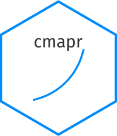

Load Sector-Specific Title Specialization Data
Source:R/sector_specialization_loader.R
load_sector_specialization.RdReads all sector-specific CSV files from the `titles/si` folder and combines them into a single tidy dataframe. Each file provides job title frequencies and specialization metrics for one industry sector.
Value
A tibble with columns: sector, title, frequency, weighted_frequency, SE, SD, SI, onet_soc_codes.
Details
Each file in `si_dir` must be named `<sector>.csv` and include columns: sector, title, frequency, weighted_frequency, SE, SD, SI, onet_soc_codes. See accompanying paper for metric methodology.
Examples
si_data <- load_sector_specialization("~/cmap_data/dataset/titles/si")
head(si_data)
#> # A tibble: 6 × 8
#> sector title frequency weighted_frequency se sd si onet_soc_codes
#> <chr> <chr> <dbl> <dbl> <dbl> <dbl> <dbl> <chr>
#> 1 Accountin… Acco… 398218 21006. 0.148 1 0.148 13-2011.00;43…
#> 2 Accountin… Lawy… 329971 17406. 0.365 1.000 0.365 23-1011.00
#> 3 Accountin… Asso… 272172 14357. 0.167 1.000 0.167 25-1126.00;25…
#> 4 Accountin… Part… 252721 13331. 0.114 1.000 0.114 13-2011.00;33…
#> 5 Accountin… Atto… 230577 12163. 0.606 1.000 0.606 23-1012.00;23…
#> 6 Accountin… Lega… 164278 8666. 0.290 1.000 0.290 23-2011.00